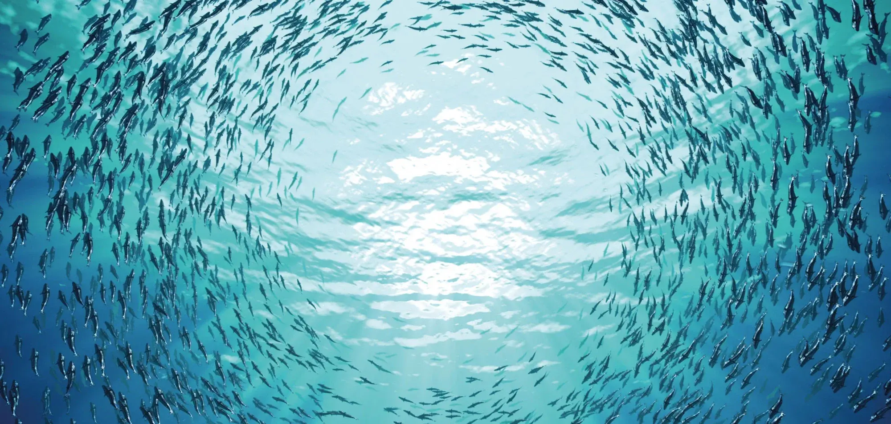

Core readings — habitats & energy
Kelp Forest Structure & Light
Estuaries & Nutrient Mixing
Pelagic Food Webs 101



Kelp Forest Structure & Light
Estuaries & Nutrient Mixing
Pelagic Food Webs 101
Seamount Biodiversity Brief
MPA Zoning & Stakeholder Tradeoffs
Readings support the biodiversity survey and species-account lab. Assign packs before students collect field notes.
Pelagic vs. benthic zones (primer)
Species account template
Trophic webs reading set
Policy briefs, MPA design tradeoffs, and stakeholder perspectives. Use these before the debate section.
MPA zoning primer
Bycatch & gear readings
Case studies on coral gardening, outplanting, and monitoring design. Pair with the restoration timeline activity.
Fragmentation & grow-out methods
Monitoring metrics reader
Deep reef, mangrove, and seagrass modules. Assign before the habitat comparison worksheet.
Mesophotic reefs overview
Mangrove-seagrass connectivity
Capstone readings tie themes together. Students compare two regions and cite three course sources.
Regional comparison brief
Evidence checklist (rubric-aligned)